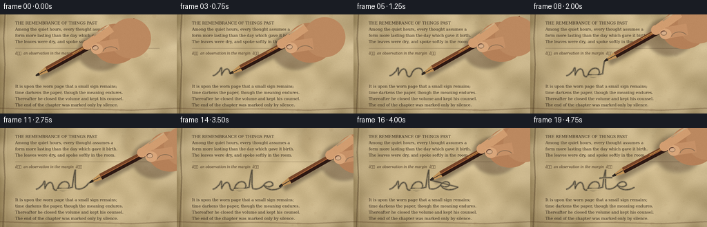
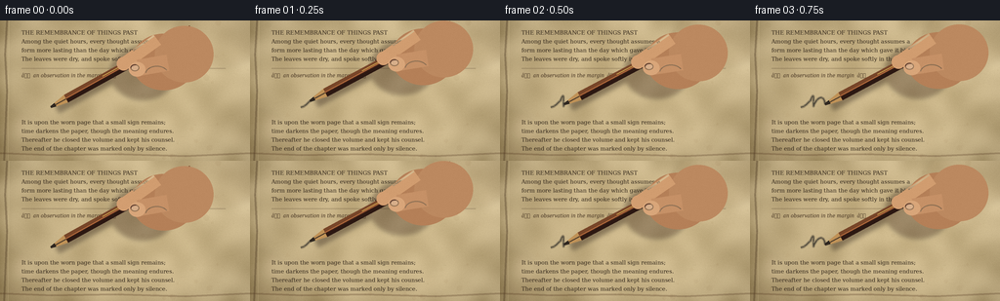
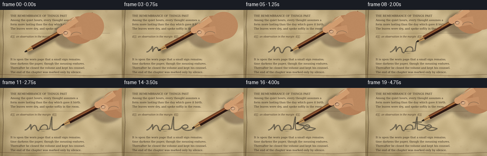

CODING AGENTS AS PIXEL WORLD MODELS
traex/GPT-5.6-Sol · mechanics_0049
点击播放 · 原生 RGB 像素
逐轮保存的候选
回放视频、检查图与代码变化。
每份候选均可单独播放。实际图片检查记录在下方工具轨迹中。
候选 01播放与检查图
点击播放 · 原生 RGB 像素

展开代码变化
--- 上一保存版本
+++ 本次保存版本
@@ -0,0 +1,207 @@
+from pathlib import Path
+import math
+import numpy as np
+from PIL import Image, ImageDraw, ImageFont, ImageFilter
+import artifact_io
+
+W,H,N,S = 256,144,20,4
+OUT = Path(__file__).resolve().parent
+rng = np.random.default_rng(4901)
+
+def font(path, size):
+ return ImageFont.truetype(path, size*S)
+SERIF='/usr/share/fonts/truetype/dejavu/DejaVuSerif.ttf'
+ITAL='/usr/share/fonts/truetype/dejavu/DejaVuSerifCondensed-Italic.ttf'
+
+# Smooth cubic Bezier helper in final-frame coordinates.
+def bez(p0,p1,p2,p3,n=18):
+ t=np.linspace(0,1,n)
+ a=((1-t)**3)[:,None]*np.array(p0); b=(3*(1-t)**2*t)[:,None]*np.array(p1)
+ c=(3*(1-t)*t*t)[:,None]*np.array(p2); d=(t**3)[:,None]*np.array(p3)
+ return a+b+c+d
+
+# A continuous, naturally imperfect cursive graphite word: "note".
+segments=[]
+def add(a,b,c,d,n=18): segments.append(bez(a,b,c,d,n))
+add((52,89),(57,88),(59,85),(62,82),12) # entry stroke
+add((62,82),(65,75),(65,75),(65,88),16) # n up/down
+add((65,88),(69,78),(76,75),(77,87),20) # n shoulder
+add((77,87),(79,92),(83,91),(84,87),10) # connector
+add((84,87),(88,75),(100,76),(100,84),22) # o upper/right
+add((100,84),(100,92),(86,93),(84,87),22) # o lower/close
+add((84,87),(91,89),(98,88),(105,86),13) # long connector
+add((105,86),(106,75),(108,66),(109,61),18) # t ascender
+add((109,61),(109,72),(108,83),(110,88),18) # t down
+add((110,88),(117,90),(122,87),(126,83),14) # connector
+add((126,83),(132,75),(140,78),(139,83),18) # e loop top
+add((139,83),(136,87),(129,86),(126,83),12) # e close
+add((126,83),(132,92),(143,91),(151,86),20) # e exit
+main_path=np.concatenate([q[:-1] for q in segments]+[segments[-1][-1:]],axis=0)
+# Crossbar is deliberately written after the connected word.
+cross=bez((100,73),(106,72),(113,72),(119,72),18)
+path=np.concatenate([main_path,cross],axis=0)
+# cumulative arc length for constant writing speed
+length=np.r_[0,np.cumsum(np.linalg.norm(np.diff(path,axis=0),axis=1))]
+
+# Make a stable old-paper photographic base at high resolution.
+yy,xx=np.mgrid[0:H*S,0:W*S]
+# warm vignetted paper with broad stains and fine fibers
+cx,cy=W*S*.52,H*S*.48
+rad=((xx-cx)/(W*S*.74))**2+((yy-cy)/(H*S*.87))**2
+base=np.empty((H*S,W*S,3),dtype=np.float32)
+base[:]=[205,184,139]
+base-=rad[...,None]*np.array([32,29,22])
+# vertical gutter darkening and page-edge darkening
+base-= (32*np.exp(-xx/(14*S)))[...,None]
+base-= (10*np.exp(-(H*S-1-yy)/(6*S)))[...,None]
+# low-frequency mottling
+small=np.clip(128+rng.normal(0,40,(24,43)),0,255).astype(np.uint8)
+mottle=np.asarray(Image.fromarray(small).resize((W*S,H*S),Image.Resampling.BICUBIC).filter(ImageFilter.GaussianBlur(8*S))).astype(np.float32)
+mottle=(mottle-mottle.mean())/(mottle.std()+1e-5)
+fine=rng.normal(0,1,(H*S,W*S))
+base += (mottle*7.0+fine*2.6)[...,None]
+base=np.clip(base,0,255).astype(np.uint8)
+base_img=Image.fromarray(base,'RGB')
+# paper details and faded typesetting
+pd=ImageDraw.Draw(base_img,'RGBA')
+# fibrous scratches and foxing specks
+for _ in range(260):
+ x=int(rng.integers(8*S,W*S)); y=int(rng.integers(0,H*S)); ln=int(rng.integers(1,7)*S)
+ col=(77,54,29,int(rng.integers(4,17)))
+ pd.line((x,y,min(W*S,x+ln),y+int(rng.integers(-1,2))),fill=col,width=1)
+for _ in range(46):
+ x=int(rng.integers(12*S,W*S)); y=int(rng.integers(0,H*S)); r=int(rng.integers(1,4)*S)
+ pd.ellipse((x-r,y-r,x+r,y+r),fill=(102,62,25,int(rng.integers(4,13))))
+# Curved gutter and ragged page edges
+pd.line([(7*S,0),(5*S,35*S),(7*S,72*S),(4*S,H*S)],fill=(58,39,21,80),width=2*S)
+pd.line([(9*S,0),(8*S,H*S)],fill=(245,226,180,35),width=S)
+pd.line([(0,136*S),(53*S,138*S),(118*S,137*S),(190*S,139*S),(W*S,136*S)],fill=(73,45,24,65),width=2*S)
+# Old printed text, leaving a broad center gap for handwriting.
+body=font(SERIF,5.7)
+italic=font(ITAL,5.5)
+lines_top=[
+ "THE REMEMBRANCE OF THINGS PAST",
+ "Among the quiet hours, every thought assumes a",
+ "form more lasting than the day which gave it birth.",
+ "The leaves were dry, and spoke softly in the room."]
+for i,txt in enumerate(lines_top):
+ pd.text((22*S,(9+i*9)*S),txt,font=body,fill=(48,37,25,112),stroke_width=0)
+# a faded rule and section marker
+pd.line((22*S,49*S,231*S,49*S),fill=(65,47,30,55),width=1*S)
+pd.text((22*S,53*S),"â an observation in the margin â",font=italic,fill=(62,44,28,80))
+lines_bottom=[
+ "It is upon the worn page that a small sign remains;",
+ "time darkens the paper, though the meaning endures.",
+ "Thereafter he closed the volume and kept his counsel.",
+ "The end of the chapter was marked only by silence."]
+for i,txt in enumerate(lines_bottom):
+ pd.text((22*S,(101+i*9)*S),txt,font=body,fill=(48,37,25,108))
+# subtle translucent stains
+stain=Image.new('RGBA',base_img.size,(0,0,0,0)); sd=ImageDraw.Draw(stain)
+sd.ellipse((178*S,-14*S,267*S,49*S),fill=(111,67,22,10),outline=(87,50,18,20),width=2*S)
+sd.ellipse((-30*S,92*S,44*S,166*S),fill=(84,50,20,10),outline=(75,44,17,17),width=2*S)
+base_img=Image.alpha_composite(base_img.convert('RGBA'),stain.filter(ImageFilter.GaussianBlur(3*S)))
+
+def poly(draw, pts, fill): draw.polygon([(int(x*S),int(y*S)) for x,y in pts],fill=fill)
+def ellipse(draw, box, fill, outline=None, width=1):
+ draw.ellipse(tuple(int(v*S) for v in box),fill=fill,outline=outline,width=width*S)
+
+def draw_hand_and_pencil(im, tip, tangent, frame_i):
+ # Pencil points from the contact up and right, with slight natural wrist motion.
+ ang=-0.505 + 0.018*math.sin(frame_i*.75)
+ u=np.array([math.cos(ang),math.sin(ang)])
+ v=np.array([-u[1],u[0]])
+ # lift only at the very end
+ lift=max(0,(frame_i-17)/2)*1.7
+ tip=np.array(tip)+np.array([0,-lift])
+ # all shadows on a separate soft layer
+ sh=Image.new('RGBA',im.size,(0,0,0,0)); sdraw=ImageDraw.Draw(sh,'RGBA')
+ def P(p): return tuple((np.array(p)*S).astype(int))
+ # shaft shadow, offset down-left
+ a=tip+u*5+v*1.8+np.array([1.5,3.0+lift*.8]); b=tip+u*150+v*1.8+np.array([1.5,3.0+lift*.8])
+ sdraw.line([P(a),P(b)],fill=(35,22,15,95),width=9*S)
+ # hand shadow: broad fingers clustered around upper shaft
+ grip=tip+u*100
+ ellipse(sdraw,(grip[0]-29+2,grip[1]-18+4,grip[0]+38+2,grip[1]+37+4),(45,25,16,85))
+ sh=sh.filter(ImageFilter.GaussianBlur((2.2+lift*.5)*S))
+ im.alpha_composite(sh)
+ d=ImageDraw.Draw(im,'RGBA')
+ # wooden sharpened cone between graphite point and painted body
+ cone_base=tip+u*18
+ graphite_base=tip+u*5.5
+ poly(d,[tip-v*1.0,graphite_base-v*2.0,graphite_base+v*2.0,tip+v*1.0],(36,31,27,255))
+ poly(d,[graphite_base-v*2.1,cone_base-v*4.5,cone_base+v*4.5,graphite_base+v*2.1],(192,146,87,255))
+ # dark graphite seam on exposed cedar
+ d.line([P(tip+u*.5),P(cone_base)],fill=(61,48,37,180),width=1*S)
+ # hexagonal dark brown lacquered body, long beyond image
+ end=tip+u*165
+ poly(d,[cone_base-v*4.5,end-v*4.5,end+v*4.5,cone_base+v*4.5],(72,37,24,255))
+ poly(d,[cone_base-v*4.5,end-v*4.5,end-v*.7,cone_base-v*.7],(120,70,41,255))
+ poly(d,[cone_base+v*.7,end+v*.7,end+v*4.5,cone_base+v*4.5],(44,24,18,255))
+ d.line([P(cone_base-v*.5),P(end-v*.5)],fill=(184,111,63,110),width=1*S)
+ # tiny gold maker's lettering on shaft
+ if tip[0] < 120:
+ q=tip+u*62
+ d.line([P(q-v*2.1),P(q+u*28-v*2.1)],fill=(205,158,76,100),width=1*S)
+ # hand on top of pencil: palm enters from upper-right, two pinching fingers.
+ hd=Image.new('RGBA',im.size,(0,0,0,0)); h=ImageDraw.Draw(hd,'RGBA')
+ g=grip
+ # palm
+ ellipse(h,(g[0]-5,g[1]-27,g[0]+61,g[1]+31),(181,128,88,255))
+ ellipse(h,(g[0]+19,g[1]-35,g[0]+79,g[1]+23),(188,137,96,255))
+ # index finger curls across upper shaft
+ p1=g+v*(-3)-u*13; p2=g+v*(-8)+u*29
+ h.line([P(p1),P(p2)],fill=(209,157,112,255),width=13*S)
+ ellipse(h,(p1[0]-7,p1[1]-7,p1[0]+7,p1[1]+7),(211,158,113,255))
+ # thumb pad below shaft
+ thumb=g+v*8-u*4
+ h.line([P(thumb+u*2),P(thumb+u*31+v*10)],fill=(198,145,103,255),width=17*S)
+ ellipse(h,(thumb[0]-8,thumb[1]-7,thumb[0]+9,thumb[1]+8),(217,166,122,255))
+ # nail at the pinch
+ nail=thumb-u*1-v*1
+ ellipse(h,(nail[0]-5,nail[1]-4,nail[0]+4,nail[1]+3),(231,186,149,210),outline=(150,100,73,100))
+ # warm highlights / finger creases
+ h.line([P(g+u*2-v*10),P(g+u*28-v*13)],fill=(238,192,150,80),width=2*S)
+ h.arc(tuple(int(z*S) for z in (g[0]+9,g[1]+6,g[0]+33,g[1]+23)),190,330,fill=(114,73,55,90),width=1*S)
+ # soften hand outline ever so slightly while retaining detail
+ im.alpha_composite(hd)
+
+frames=[]
+for i in range(N):
+ im=base_img.copy()
+ # Time profile: poised at first, then writes steadily, briefly shows finished mark.
+ if i==0: progress=0.0
+ else: progress=min(1.0,(i-0.4)/17.2)
+ target=progress*length[-1]
+ k=int(np.searchsorted(length,target,side='right')-1)
+ k=max(0,min(k,len(path)-2))
+ frac=(target-length[k])/(length[k+1]-length[k]+1e-9)
+ tip=path[k]*(1-frac)+path[k+1]*frac
+ tangent=path[k+1]-path[k]
+ # graphite already deposited up to current point, as layered dry uneven strokes
+ md=Image.new('RGBA',im.size,(0,0,0,0)); m=ImageDraw.Draw(md,'RGBA')
+ if target>0:
+ pts=list(path[:k+1]) + [tip]
+ ptsS=[tuple((p*S).astype(int)) for p in pts]
+ # soft grain embedded in paper plus crisp core
+ m.line(ptsS,fill=(39,36,33,75),width=3*S,joint='curve')
+ m.line(ptsS,fill=(29,29,28,188),width=1*S,joint='curve')
+ # broken graphite sparkle/grain along completed trajectory
+ for j in range(3,k,7):
+ p=path[j]; rr=0.35*S
+ m.ellipse((p[0]*S-rr,p[1]*S-rr,p[0]*S+rr,p[1]*S+rr),fill=(18,18,18,105))
+ # contact smudge at opening letters, subtly accumulating
+ if progress>.35:
+ m.ellipse((82*S,88*S,104*S,91*S),fill=(40,35,31,10))
+ im=Image.alpha_composite(im,md)
+ draw_hand_and_pencil(im,tip,tangent,i)
+ # slight photographic warmth and downsample anti-aliasing
+ rgb=im.convert('RGB').resize((W,H),Image.Resampling.LANCZOS)
+ arr=np.asarray(rgb).astype(np.int16)
+ # minimal sensor grain keeps texture alive after resampling
+ grain=np.random.default_rng(900+i).normal(0,0.65,arr.shape[:2])[:,:,None]
+ arr=np.clip(arr+grain,0,255).astype(np.uint8)
+ frames.append(arr)
+
+artifact_io.save(np.stack(frames),OUT)
+print(f"saved {len(frames)} RGB frames to {OUT}")
候选 02播放与检查图
点击播放 · 原生 RGB 像素


展开代码变化
--- 上一保存版本
+++ 本次保存版本
@@ -181,14 +181,27 @@
# graphite already deposited up to current point, as layered dry uneven strokes
md=Image.new('RGBA',im.size,(0,0,0,0)); m=ImageDraw.Draw(md,'RGBA')
if target>0:
- pts=list(path[:k+1]) + [tip]
- ptsS=[tuple((p*S).astype(int)) for p in pts]
- # soft grain embedded in paper plus crisp core
- m.line(ptsS,fill=(39,36,33,75),width=3*S,joint='curve')
- m.line(ptsS,fill=(29,29,28,188),width=1*S,joint='curve')
+ # The crossbar is a separate pen-down stroke: never draw the airborne
+ # repositioning movement from the end of the word back to the t.
+ if k < len(main_path):
+ stroke=list(path[:k+1]) + [tip]
+ completed=path[:k+1]
+ strokes=[stroke]
+ else:
+ ck=k-len(main_path)
+ stroke2=list(cross[:max(0,ck)+1])
+ if ck+1 < len(cross): stroke2.append(tip)
+ completed=np.concatenate([main_path,cross[:max(0,ck)+1]])
+ strokes=[list(main_path),stroke2]
+ for stroke in strokes:
+ if len(stroke)>1:
+ ptsS=[tuple((p*S).astype(int)) for p in stroke]
+ # soft grain embedded in paper plus crisp core
+ m.line(ptsS,fill=(39,36,33,75),width=3*S,joint='curve')
+ m.line(ptsS,fill=(29,29,28,188),width=1*S,joint='curve')
# broken graphite sparkle/grain along completed trajectory
- for j in range(3,k,7):
- p=path[j]; rr=0.35*S
+ for p in completed[3::7]:
+ rr=0.35*S
m.ellipse((p[0]*S-rr,p[1]*S-rr,p[0]*S+rr,p[1]*S+rr),fill=(18,18,18,105))
# contact smudge at opening letters, subtly accumulating
if progress>.35:
可观测工具轨迹
实际执行的命令与返回图片。
命令 1exit 0
/bin/bash -lc "cat prompt.txt && printf '\\n---RULES---\\n' && cat GENERATION_RULES.md && printf '\\n---SPEC---\\n' && cat task_spec.json"
命令 2exit 0
/bin/bash -lc "find . -maxdepth 2 -type f -printf '%p\\n' | sort"
命令 3exit 0
/bin/bash -lc "sed -n '1,240p' artifact_io.py"
命令 4exit 0
/bin/bash -lc 'fc-list | head -20'
命令 5exit 1
/bin/bash -lc "cat > generate.py <<'PY'
from pathlib import Path
import math
import numpy as np
from PIL import Image, ImageDraw, ImageFont, ImageFilter
import artifact_io
W,H,N,S = 256,144,20,4
OUT = Path(__file__).resolve().parent
rng = np.random.default_rng(4901)
def font(path, size):
return ImageFont.truetype(path, size*S)
SERIF='/usr/share/fonts/truetype/dejavu/DejaVuSerif.ttf'
ITAL='/usr/share/fonts/truetype/dejavu/DejaVuSerifCondensed-Italic.ttf'
# Smooth cubic Bezier helper in final-frame coordinates.
def bez(p0,p1,p2,p3,n=18):
t=np.linspace(0,1,n)
a=((1-t)**3)[:,None]*np.array(p0); b=(3*(1-t)**2*t)[:,None]*np.array(p1)
c=(3*(1-t)*t*t)[:,None]*np.array(p2); d=(t**3)[:,None]*np.array(p3)
return a+b+c+d
# A continuous, naturally imperfect cursive graphite word: \"note\".
segments=[]
def add(a,b,c,d,n=18): segments.append(bez(a,b,c,d,n))
add((52,89),(57,88),(59,85),(62,82),12) # entry stroke
add((62,82),(65,75),(65,75),(65,88),16) # n up/down
add((65,88),(69,78),(76,75),(77,87),20) # n shoulder
add((77,87),(79,92),(83,91),(84,87),10) # connector
add((84,87),(88,75),(100,76),(100,84),22) # o upper/right
add((100,84),(100,92),(86,93),(84,87),22) # o lower/close
add((84,87),(91,89),(98,88),(105,86),13) # long connector
add((105,86),(106,75),(108,66),(109,61),18) # t ascender
add((109,61),(109,72),(108,83),(110,88),18) # t down
add((110,88),(117,90),(122,87),(126,83),14) # connector
add((126,83),(132,75),(140,78),(139,83),18) # e loop top
add((139,83),(136,87),(129,86),(126,83),12) # e close
add((126,83),(132,92),(143,91),(151,86),20) # e exit
main_path=np.concatenate([q[:-1] for q in segments]+[segments[-1][-1:]],axis=0)
# Crossbar is deliberately written after the connected word.
cross=bez((100,73),(106,72),(113,72),(119,72),18)
path=np.concatenate([main_path,cross],axis=0)
# cumulative arc length for constant writing speed
length=np.r_[0,np.cumsum(np.linalg.norm(np.diff(path,axis=0),axis=1))]
# Make a stable old-paper photographic base at high resolution.
yy,xx=np.mgrid[0:H*S,0:W*S]
# warm vignetted paper with broad stains and fine fibers
cx,cy=W*S*.52,H*S*.48
rad=((xx-cx)/(W*S*.74))**2+((yy-cy)/(H*S*.87))**2
base=np.empty((H*S,W*S,3),dtype=np.float32)
base[:]=[205,184,139]
base-=rad[...,None]*np.array([32,29,22])
# vertical gutter darkening and page-edge darkening
base-= (32*np.exp(-xx/(14*S)))[...,None]
base-= (10*np.exp(-(H*S-1-yy)/(6*S)))[...,None]
# low-frequency mottling
small=rng.normal(0,1,(24,43)).astype(np.float32)
mottle=np.asarray(Image.fromarray(small,mode='F').resize((W*S,H*S),Image.Resampling.BICUBIC).filter(ImageFilter.GaussianBlur(8*S)))
mottle=(mottle-mottle.mean())/(mottle.std()+1e-5)
fine=rng.normal(0,1,(H*S,W*S))
base += (mottle*7.0+fine*2.6)[...,None]
base=np.clip(base,0,255).astype(np.uint8)
base_img=Image.fromarray(base,'RGB')
# paper details and faded typesetting
pd=ImageDraw.Draw(base_img,'RGBA')
# fibrous scratches and foxing specks
for _ in range(260):
x=int(rng.integers(8*S,W*S)); y=int(rng.integers(0,H*S)); ln=int(rng.integers(1,7)*S)
col=(77,54,29,int(rng.integers(4,17)))
pd.line((x,y,min(W*S,x+ln),y+int(rng.integers(-1,2))),fill=col,width=1)
for _ in range(46):
x=int(rng.integers(12*S,W*S)); y=int(rng.integers(0,H*S)); r=int(rng.integers(1,4)*S)
pd.ellipse((x-r,y-r,x+r,y+r),fill=(102,62,25,int(rng.integers(4,13))))
# Curved gutter and ragged page edges
pd.line([(7*S,0),(5*S,35*S),(7*S,72*S),(4*S,H*S)],fill=(58,39,21,80),width=2*S)
pd.line([(9*S,0),(8*S,H*S)],fill=(245,226,180,35),width=S)
pd.line([(0,136*S),(53*S,138*S),(118*S,137*S),(190*S,139*S),(W*S,136*S)],fill=(73,45,24,65),width=2*S)
# Old printed text, leaving a broad center gap for handwriting.
body=font(SERIF,5.7)
italic=font(ITAL,5.5)
lines_top=[
\"THE REMEMBRANCE OF THINGS PAST\",
\"Among the quiet hours, every thought assumes a\",
\"form more lasting than the day which gave it birth.\",
\"The leaves were dry, and spoke softly in the room.\"]
for i,txt in enumerate(lines_top):
pd.text((22*S,(9+i*9)*S),txt,font=body,fill=(48,37,25,112),stroke_width=0)
# a faded rule and section marker
pd.line((22*S,49*S,231*S,49*S),fill=(65,47,30,55),width=1*S)
pd.text((22*S,53*S),\"â an observation in the margin â\",font=italic,fill=(62,44,28,80))
lines_bottom=[
\"It is upon the worn page that a small sign remains;\",
\"time darkens the paper, though the meaning endures.\",
\"Thereafter he closed the volume and kept his counsel.\",
\"The end of the chapter was marked only by silence.\"]
for i,txt in enumerate(lines_bottom):
pd.text((22*S,(101+i*9)*S),txt,font=body,fill=(48,37,25,108))
# subtle translucent stains
stain=Image.new('RGBA',base_img.size,(0,0,0,0)); sd=ImageDraw.Draw(stain)
sd.ellipse((178*S,-14*S,267*S,49*S),fill=(111,67,22,10),outline=(87,50,18,20),width=2*S)
sd.ellipse((-30*S,92*S,44*S,166*S),fill=(84,50,20,10),outline=(75,44,17,17),width=2*S)
base_img=Image.alpha_composite(base_img.convert('RGBA'),stain.filter(ImageFilter.GaussianBlur(3*S)))
def poly(draw, pts, fill): draw.polygon([(int(x*S),int(y*S)) for x,y in pts],fill=fill)
def ellipse(draw, box, fill, outline=None, width=1):
draw.ellipse(tuple(int(v*S) for v in box),fill=fill,outline=outline,width=width*S)
def draw_hand_and_pencil(im, tip, tangent, frame_i):
# Pencil points from the contact up and right, with slight natural wrist motion.
ang=-0.505 + 0.018*math.sin(frame_i*.75)
u=np.array([math.cos(ang),math.sin(ang)])
v=np.array([-u[1],u[0]])
# lift only at the very end
lift=max(0,(frame_i-17)/2)*1.7
tip=np.array(tip)+np.array([0,-lift])
# all shadows on a separate soft layer
sh=Image.new('RGBA',im.size,(0,0,0,0)); sdraw=ImageDraw.Draw(sh,'RGBA')
def P(p): return tuple((np.array(p)*S).astype(int))
# shaft shadow, offset down-left
a=tip+u*5+v*1.8+np.array([1.5,3.0+lift*.8]); b=tip+u*150+v*1.8+np.array([1.5,3.0+lift*.8])
sdraw.line([P(a),P(b)],fill=(35,22,15,95),width=9*S)
# hand shadow: broad fingers clustered around upper shaft
grip=tip+u*100
ellipse(sdraw,(grip[0]-29+2,grip[1]-18+4,grip[0]+38+2,grip[1]+37+4),(45,25,16,85))
sh=sh.filter(ImageFilter.GaussianBlur((2.2+lift*.5)*S))
im.alpha_composite(sh)
d=ImageDraw.Draw(im,'RGBA')
# wooden sharpened cone between graphite point and painted body
cone_base=tip+u*18
graphite_base=tip+u*5.5
poly(d,[tip-v*1.0,graphite_base-v*2.0,graphite_base+v*2.0,tip+v*1.0],(36,31,27,255))
poly(d,[graphite_base-v*2.1,cone_base-v*4.5,cone_base+v*4.5,graphite_base+v*2.1],(192,146,87,255))
# dark graphite seam on exposed cedar
d.line([P(tip+u*.5),P(cone_base)],fill=(61,48,37,180),width=1*S)
# hexagonal dark brown lacquered body, long beyond image
end=tip+u*165
poly(d,[cone_base-v*4.5,end-v*4.5,end+v*4.5,cone_base+v*4.5],(72,37,24,255))
poly(d,[cone_base-v*4.5,end-v*4.5,end-v*.7,cone_base-v*.7],(120,70,41,255))
poly(d,[cone_base+v*.7,end+v*.7,end+v*4.5,cone_base+v*4.5],(44,24,18,255))
d.line([P(cone_base-v*.5),P(end-v*.5)],fill=(184,111,63,110),width=1*S)
# tiny gold maker's lettering on shaft
if tip[0] < 120:
q=tip+u*62
d.line([P(q-v*2.1),P(q+u*28-v*2.1)],fill=(205,158,76,100),width=1*S)
# hand on top of pencil: palm enters from upper-right, two pinching fingers.
hd=Image.new('RGBA',im.size,(0,0,0,0)); h=ImageDraw.Draw(hd,'RGBA')
g=grip
# palm
ellipse(h,(g[0]-5,g[1]-27,g[0]+61,g[1]+31),(181,128,88,255))
ellipse(h,(g[0]+19,g[1]-35,g[0]+79,g[1]+23),(188,137,96,255))
# index finger curls across upper shaft
p1=g+v*(-3)-u*13; p2=g+v*(-8)+u*29
h.line([P(p1),P(p2)],fill=(209,157,112,255),width=13*S)
ellipse(h,(p1[0]-7,p1[1]-7,p1[0]+7,p1[1]+7),(211,158,113,255))
# thumb pad below shaft
thumb=g+v*8-u*4
h.line([P(thumb+u*2),P(thumb+u*31+v*10)],fill=(198,145,103,255),width=17*S)
ellipse(h,(thumb[0]-8,thumb[1]-7,thumb[0]+9,thumb[1]+8),(217,166,122,255))
# nail at the pinch
nail=thumb-u*1-v*1
ellipse(h,(nail[0]-5,nail[1]-4,nail[0]+4,nail[1]+3),(231,186,149,210),outline=(150,100,73,100))
# warm highlights / finger creases
h.line([P(g+u*2-v*10),P(g+u*28-v*13)],fill=(238,192,150,80),width=2*S)
h.arc(tuple(int(z*S) for z in (g[0]+9,g[1]+6,g[0]+33,g[1]+23)),190,330,fill=(114,73,55,90),width=1*S)
# soften hand outline ever so slightly while retaining detail
im.alpha_composite(hd)
frames=[]
for i in range(N):
im=base_img.copy()
# Time profile: poised at first, then writes steadily, briefly shows finished mark.
if i==0: progress=0.0
else: progress=min(1.0,(i-0.4)/17.2)
target=progress*length[-1]
k=int(np.searchsorted(length,target,side='right')-1)
k=max(0,min(k,len(path)-2))
frac=(target-length[k])/(length[k+1]-length[k]+1e-9)
tip=path[k]*(1-frac)+path[k+1]*frac
tangent=path[k+1]-path[k]
# graphite already deposited up to current point, as layered dry uneven strokes
md=Image.new('RGBA',im.size,(0,0,0,0)); m=ImageDraw.Draw(md,'RGBA')
if target>0:
pts=list(path[:k+1]) + [tip]
ptsS=[tuple((p*S).astype(int)) for p in pts]
# soft grain embedded in paper plus crisp core
m.line(ptsS,fill=(39,36,33,75),width=3*S,joint='curve')
m.line(ptsS,fill=(29,29,28,188),width=1*S,joint='curve')
# broken graphite sparkle/grain along completed trajectory
for j in range(3,k,7):
p=path[j]; rr=0.35*S
m.ellipse((p[0]*S-rr,p[1]*S-rr,p[0]*S+rr,p[1]*S+rr),fill=(18,18,18,105))
# contact smudge at opening letters, subtly accumulating
if progress>.35:
m.ellipse((82*S,88*S,104*S,91*S),fill=(40,35,31,10))
im=Image.alpha_composite(im,md)
draw_hand_and_pencil(im,tip,tangent,i)
# slight photographic warmth and downsample anti-aliasing
rgb=im.convert('RGB').resize((W,H),Image.Resampling.LANCZOS)
arr=np.asarray(rgb).astype(np.int16)
# minimal sensor grain keeps texture alive after resampling
grain=np.random.default_rng(900+i).normal(0,0.65,arr.shape[:2])[:,:,None]
arr=np.clip(arr+grain,0,255).astype(np.uint8)
frames.append(arr)
artifact_io.save(np.stack(frames),OUT)
print(f\"saved {len(frames)} RGB frames to {OUT}\")
PY
python generate.py"命令 6exit 0
/bin/bash -lc "python - <<'PY' p='generate.py' s=open(p).read() s=s.replace(\"small=rng.normal(0,1,(24,43)).astype(np.float32)\\nmottle=np.asarray(Image.fromarray(small,mode='F').resize((W*S,H*S),Image.Resampling.BICUBIC).filter(ImageFilter.GaussianBlur(8*S)))\", \"small=np.clip(128+rng.normal(0,40,(24,43)),0,255).astype(np.uint8)\\nmottle=np.asarray(Image.fromarray(small).resize((W*S,H*S),Image.Resampling.BICUBIC).filter(ImageFilter.GaussianBlur(8*S))).astype(np.float32)\") open(p,'w').write(s) PY python generate.py"
命令 7exit 0
/bin/bash -lc "python - <<'PY'
p='generate.py'; s=open(p).read()
s=s.replace('\"â an observation in the margin âÂÂ\"','\"â an observation in the margin â\"')
old=''' pts=list(path[:k+1]) + [tip]
ptsS=[tuple((p*S).astype(int)) for p in pts]
# soft grain embedded in paper plus crisp core
m.line(ptsS,fill=(39,36,33,75),width=3*S,joint='curve')
m.line(ptsS,fill=(29,29,28,188),width=1*S,joint='curve')
# broken graphite sparkle/grain along completed trajectory
for j in range(3,k,7):
p=path[j]; rr=0.35*S
m.ellipse((p[0]*S-rr,p[1]*S-rr,p[0]*S+rr,p[1]*S+rr),fill=(18,18,18,105))'''
new=''' # The crossbar is a separate pen-down stroke: never draw the airborne
# repositioning movement from the end of the word back to the t.
if k < len(main_path):
stroke=list(path[:k+1]) + [tip]
completed=path[:k+1]
strokes=[stroke]
else:
ck=k-len(main_path)
stroke2=list(cross[:max(0,ck)+1])
if ck+1 < len(cross): stroke2.append(tip)
completed=np.concatenate([main_path,cross[:max(0,ck)+1]])
strokes=[list(main_path),stroke2]
for stroke in strokes:
if len(stroke)>1:
ptsS=[tuple((p*S).astype(int)) for p in stroke]
# soft grain embedded in paper plus crisp core
m.line(ptsS,fill=(39,36,33,75),width=3*S,joint='curve')
m.line(ptsS,fill=(29,29,28,188),width=1*S,joint='curve')
# broken graphite sparkle/grain along completed trajectory
for p in completed[3::7]:
rr=0.35*S
m.ellipse((p[0]*S-rr,p[1]*S-rr,p[0]*S+rr,p[1]*S+rr),fill=(18,18,18,105))'''
assert old in s
s=s.replace(old,new)
open(p,'w').write(s)
PY
python generate.py
python - <<'PY'
import json, numpy as np
from pathlib import Path
p=Path('.')
a=np.load('pixels.npz')['pixels']
print('pixels',a.shape,a.dtype,'frames',len(list(Path('frames').glob('*.png'))))
print('artifacts',[(x.name,x.stat().st_size) for x in [Path('pixels.npz'),Path('index.html'),Path('inspection.png')]])
PY"视觉工具实际返回图片 1

视觉工具实际返回图片 2

保存候选 2 份；完成命令 7 次；可验证图片返回 2 张。原始 API 响应与完整日志保留在本地。